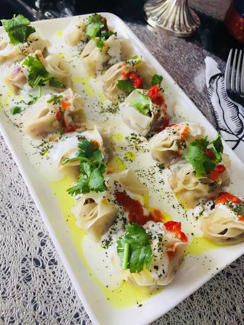
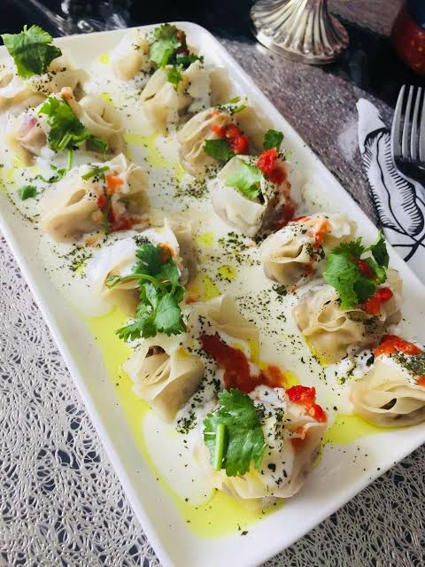

I listed the best and delicious foods in this page you can choose and go on the Full Recipe . thank you for your choosing us.💖
 

Manto is one of the best and most delicious local dishes of Afghanistan. It is made with meat, vegetables, and dough. In Afghan cuisine, the thinly rolled out dough of the mantu is filled with beef or lamb mixed with minced onions and spices, steamed and then topped with a yoghurt-based sauce.
Kabuli Pulao, also known as Qabuli Palaw, is Afghanistan’s national dish, beloved for its fragrant spices, tender meat, and perfectly cooked rice topped with sweet carrots and raisins. This dish balances both savory and sweet flavors, making it a standout on festive tables and family dinners.


Bolani is a stuffed flatbread from the Afghan cuisine. It is usually filled with a mix of potatoes, cilantro, and green peppers, but it can also be filled with pumpkin, red lentils, or chives. It is usually served with a green chutney and enjoyed as a side dish, or as a snack with a cup of tea..

One of the delicious desserts served in Afghanistan is firni. This dessert is also very popular in Iran and has become one of the delicious dishes of these two countries. In this country, instead of using rice to make farni, they use cornstarch and cook it with milk and sugar.


Baklava; golden colors and fragrant flavors of saffron, becomes a good choice among all kinds of Afghan desserts and sweets by including a unique combination of colorful spices . This lovely baklava with its sweet taste and special aroma will win everyone's heart.

Haft Miwa is one of the types of Afghan desserts and sweets that are prepared and served especially during the Nowruz celebration. This delicious and nutritious dessert is made from a combination of several types of dried fruits and is a symbol of happiness and abundance in Afghan culture.
Kimak Tea" or "Sarshir" is one of the most popular local drinks in Afghanistan, but when kimak is combined with black or green tea in a special way, kimak tea is obtained.

Doogh is an Afghan drink. It is prepared during the hot summer days. it is so delicious.


Green tea is one of the healthiest teas and is less processed than other teas. It contains antioxidants, potassium, B vitamins, magnesium, manganese, and caffeine. Among the properties of green tea are its anti-aging and slimming properties.